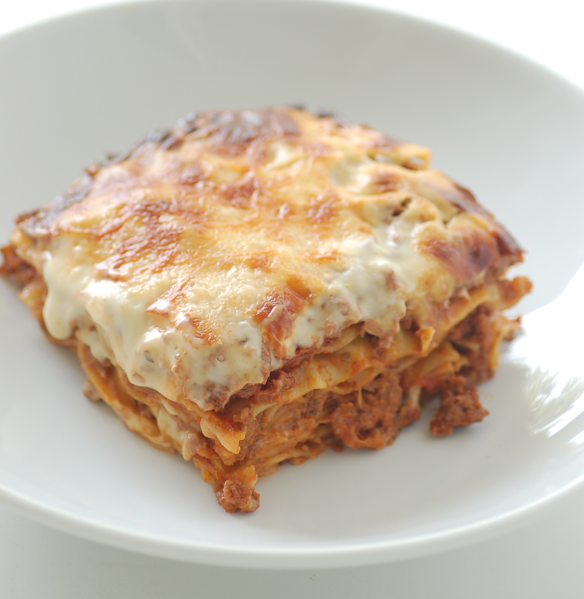

By jules / stonesoup - mum's lasagne, CC BY 2.0, Link
Lasagna, also known by the plural form lasagne, is a type of pasta made in wide, flat sheets. It originates in Italian cuisine, where it is served in a number of ways, including in broth (lasagne in brodo), but is best known for its use in a baked dish made by stacking layers of pasta, alternating with fillings such as ragù (ground meats and tomato sauce), béchamel sauce, vegetables, cheeses (which may include ricotta, mozzarella, and Parmesan), and seasonings and spices. Typically, cooked pasta is assembled with the other ingredients, topped with grated cheese, and then baked in an oven (al forno): regional variations of this dish are found across Italy.